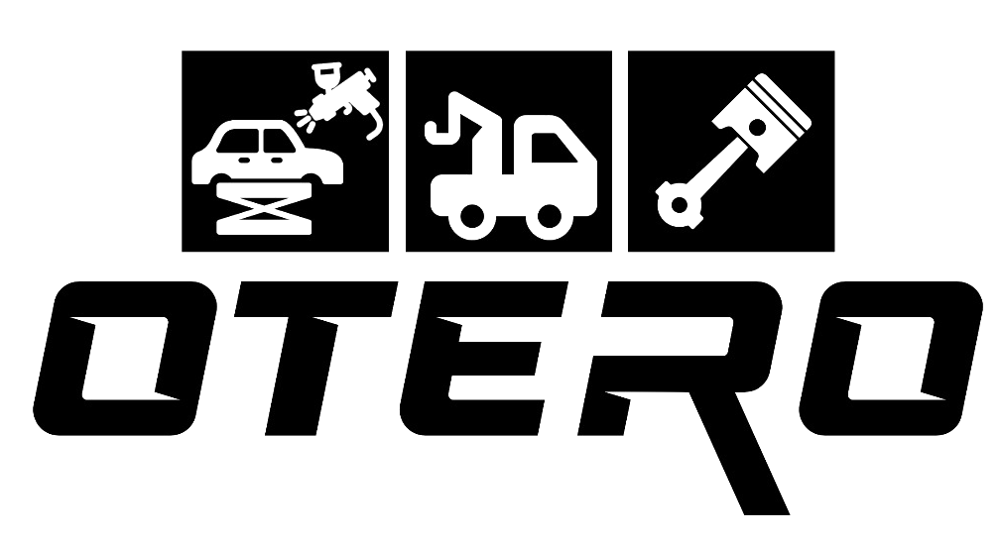
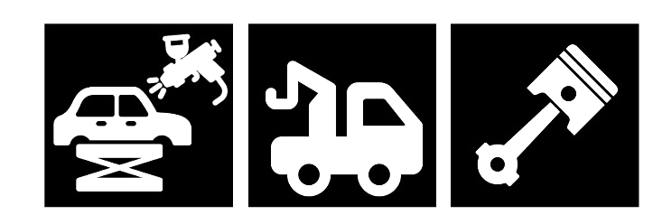

Grúa
Servizo de asistencia en vía e remolque. Disponibilidade para averías, accidentes ou traslados con seguridade.
Louredo · Maside
Asistencia en carretera e taller integral. Atención rápida, profesional e de proximidade no corazón de Ourense.

Servizos
Un mesmo equipo para sacalo da estrada, deixalo a punto e recuperar a súa carrocería. Servizo local con trato directo.
Servizo de asistencia en vía e remolque. Disponibilidade para averías, accidentes ou traslados con seguridade.
Reparación e mantemento no taller: motor, frenos, suspensión e diagnóstico para deixar o coche listo.
Chapa e pintura para recuperar a carrocería tras golpes ou rozaduras. Acabado coidado e profesional.

Otero é o seu punto de referencia en Louredo: grúa cando máis precisa, taller de mecánica para o día a día e chapa para deixar o vehículo como novo. Traballo de proximidade, sen complicacións.
Ubicación
Estamos en Maside, preto da estrada, para atendelo con rapidez na zona e arredores.
Carreira de Louredo, 2
32540 Maside, Ourense
Consulte dispoñibilidade por teléfono.
Asistencia en vía segundo necesidade.